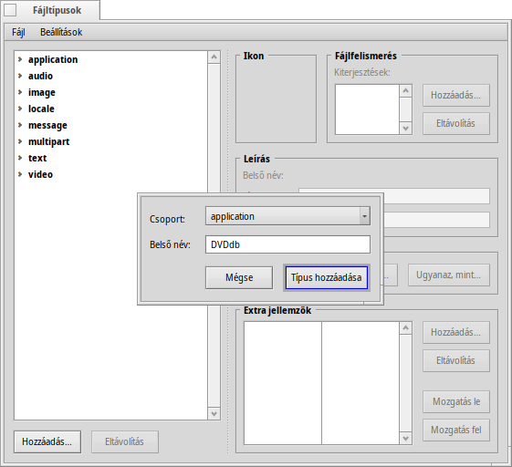
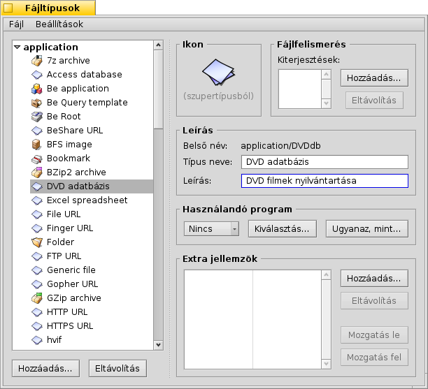
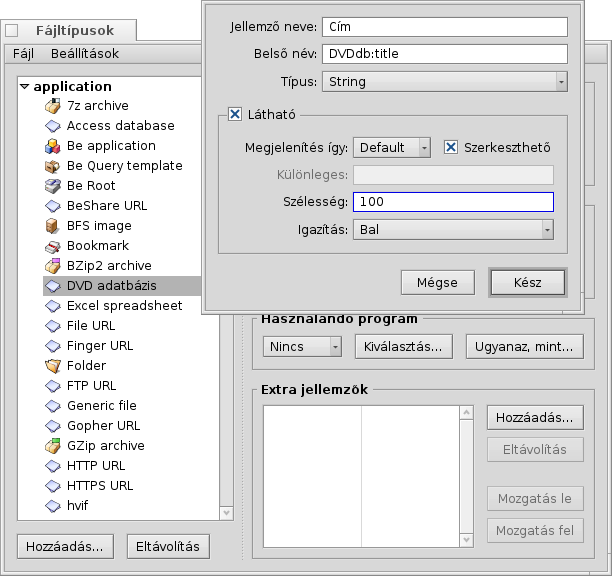
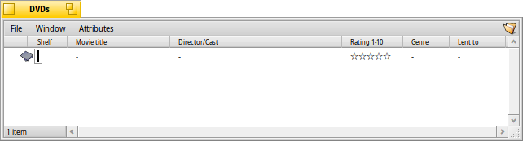

Magyar
Magyar Català
Català Deutsch
Deutsch English
English Español
Español Français
Français Italiano
Italiano Polski
Polski Português
Português Português (Brazil)
Português (Brazil) Română
Română Slovenčina
Slovenčina Suomi
Suomi Svenska
Svenska 中文 ［中文］
中文 ［中文］ Русский
Русский Українська
Українська 日本語
日本語| Index |
|
Előkészítés Egyéni fájltípus létrehozása Ikon Fájl azonosítása Leírás Előnyben részesített programok További jellemzők Indexelés Adatok megadása Lekérdezés az adatbázisból |
Műhely: fájltípusok, jellemzők, indexek és lekérdezések
Ebben a témakörben bemutatjuk a Jellemzők, a Lekérdezések, az Index és az egyéni Fájltípusok használatát. Példaként egy DVD adatbázis hozunk létre.
 Előkészítés
Előkészítés
Elsőként el kell dönteni, hogy milyen típusú fájlra és milyen jellemzőkre van szükségünk.
Eredetileg azt terveztem, hogy könyvjelző fájlt fogok használni egy hivatkozással a film IMDB-s oldalára. Mivel azonban a Haiku nem rendelkezik "könyvjelzőzhető" böngészővel, mint például BeOS esetében a NetPositive, ezért a következő megoldást választottam: a fájl maga egy JPEG kép lesz, amit majd a film borítójaként fogok használni.
A WebPositive használatával a Haiku mostmár rendelkezik egy könyvjelző fájlokat támogató böngészővel, így már használhatunk könyjlező fájlokat is alap típusként a kép helyett.
Ehhez a fájlhoz képhez pedig több jellemzőt is hozzá kell adni.
Itt most el kell düntenünk, hogy milyen adatot is tároljunk az adatbázisban, és azoknak milyen legyen a típusa. Kereséskor a számokkal (int, float) kicsit eltérően tudunk dolgozni, mint a szöveggel (</=/> szám esetében, és egyenlő/tartalmaz/eleje szöveg esetében).
Az alábbi jellemzőket szeretném látni a DVD filmjeimhez:
- Cím
- Kategória
- URL, például az IMDB-n
- Rendező
- Kiadó
- Értékelés
- Stúdió
- És például, hogy ki kérte kölcsön
Egyéni fájltípus létrehozása
Elsőként nyissuk meg a Fájltípusok beállításokat, majd kattintsunk a gombra a lista alatt. Ekkor kapunk egy kis ablakot, ahol meg kell adni a MIME csoportot, amin belül majd a fájltípus megtalálható lesz. Persze, egy teljesen új csoport is létrehozható. Esetünkben ezt most tegyük az "applications" csoportba és adjuk meg a DVDdb-t, mint "belső nevet".
Ekkor az új fájltípus már megjelenik az ablakban:

Ikon
Az ikonon duplán kattintva az megnyílik az Icon-O-Matic ablakban, ahol a fájltípusnak megfelelőt létre lehet hozni. Persze, egy másik típus ikonja is idehúzható, mint egy meglévő módosításának kiindulópontja.
Fájl azonosítása
Különféle kiterjesztések is adhatóak a típushoz, mint például .txt, .jpg, .mp3 annak érdekében, hogy a kiterjesztés alapján is felismerhetőek legyenek. Ez akkor is hasznos lehet, hogyha olyan fájlokkal dolgozunk, amik nem rendelkeznek MIME azonosítóval. Jelen példában erre nincs szükség.
Leírás
- Típus neve - Ez jelenik meg például a Jellemzők menüben a Nyomkövető ablakban..
- Leírás - Részletesebb információ a megadása.
Előnyben részesített programok
Ez a menü tartalmazza azon programok listáját, amik a típust kezelni tudják. Itt megadható, hogy a fájl melyik programmal nyíljon meg ha duplán kattintunk azon.
| Egy fájl-ablakot nyit meg, ahol kiválaszthatjuk azt a programot, amivel meg akarjuk nyitni az adott típust. Ebben az esetben például megadhatjuk a Képmegjelenítőt, hogy megjelenítse a DVD borítóképét. | ||
| Megnyit egy fájl-ablakot, amiben kiválaszthatunk egy olyan fájlt, amit a kívánt program nyit meg, így ezt a típust is azt fogja megnyitni. |
További jellemzők
Itt megadhatunk minden olyan további jellemzőt, amit használni akarunk. A gombon kattitnva az alábbi ablakot kapjuk:
Jellemző neve - Ez jelenik meg például egy oszlop neveként a Nyomkövető ablakban.
Belső név - Indexeléskor és kereséskor használt név.
- Típus - Megadja a jellemző adat-típusát, hogy milyen jellegű adatot tárol majd, és hogy kereséskor hogyan lehet rá hivatkozni.
- - egyszerű szöveg
- - bináris adat, mely lehet 1 vagy 0
- - egész számok az alábbi tartományokban:
- : ± 255
- : ± 65,535
- : ± 4,294,967,295
- : ± 18,446,744,073,709,551,615
- - lebegőpontos számok, egy tizedes jegyig
- - lebegőpontos számok, két tizedes jegyig
- - dátum és idő formátum
- Látható - Csak a négyzet bejelölésekor jelenik meg a jellemző a Nyomkövető ablakban. Mivel a Nyomkövető lesz a adatbázisunk felülete, így ezt be kell jelölni, majd néhány megjelenítési beállítást is meg kell adni:
- - Hagyjuk "Default"-on (alapértelmezett). A későbbiekben több típus is választható, mint például sáv.
- - A jellemző szerkeszthetősége a Nyomkövető ablakban.
- - A jellemzőhöz tartozó oszlop alapértelmezett szélessége.
- - Az oszlop igazítása balra, középre vagy jobbra.
Ezek után adjuk meg a következő jellemzőket:
| Belső név | Jellemző típusa | indexelt? | Leírás |
|---|---|---|---|
| DVDdb:title | egyszerű szöveg | igen | Cím |
| DVDdb:genre | egyszerű szöveg | igen | Kategória |
| DVDdb:url | egyszerű szöveg | nem | URL |
| DVDdb:cast | egyszerű szöveg | igen | Rendező |
| DVDdb:author | egyszerű szöveg | nem | Kiadó |
| DVDdb:rating | 32 bites szám | igen | Értékelés |
| DVDdb:studio | egyszerű szöveg | nem | Stúdió |
| DVDdb:lent | egyszerű szöveg | igen | Kinél van |
Indexelés
Mielőtt adatot adnánk a mi kis DVD adatbázisunkhoz, előtte néhány jellemzőt az Indexhez kell adnunk. Csak az indexel jellemzők használhatóak a Lekérdezéseknél.
El kell döntenünk azt is, hogy miket akarunk majd a jövőben keresni. Tehát, hogy ne kelljen majd megkérdezni, hogy "Vajon milyen filmjeim vannak a Brad Wright rendezésével?" vagy azt, hogy "Van-e rossz értékeléssel rendelkező természetfilmem?".
Ezekre a kérdésekre a következő jellemzőket kell indexelnünk:
| Belső név | Jellemző típusa |
|---|---|
| DVDdb:title | egyszerű szöveg |
| DVDdb:genre | egyszerű szöveg |
| DVDdb:cast | egyszerű szöveg |
| DVDdb:rating | 32 bites szám |
Az indexeléshez pedig a következő sorokat kell kiadni a Terminálban:
mkindex -t string DVDdb:title mkindex -t string DVDdb:genre mkindex -t string DVDdb:cast mkindex -t int DVDdb:rating
A -t opció a jellemző típusát adja meg, ami az értékelés kivételével (ami "int" (szám)) mind "string" (szöveg).
Adatok megadása
Nos, minden előkészülettel végeztünk, mostmár hozzáadhatjuk az adatokat az adatbázisunkhoz.
Mivel az alap fájlunk egy borító-kép, ezért az interneten keressük meg (például az IMDB-n) és mentsük le azt egy mappába, ahol majd az adatbázisunkat fogjuk tárolni.
A mappát megnyitva azt látjuk, hogy van egy kép benne. Jobb gombbal kattitnva a fájlon, a típusát meg kell változtatnunk application/DVDdb típusra a Fájltípus kiegészítőben. További információ a Fájltípusok fejezetben.
Most pedig válasszuk ki, hogy mely jellemzők jelenjenek meg. Ezt megtehetjük a menüből vagy az oszlopfejléceken, majd az oszlopokat is átrendezhetjük kedvünkre:
Egy üres jellemzőn kattintva (vagy ALT E) a szerkesztő módba jutunk. A TAB és a SHIFT TAB kombinációval válthatunk a mezők (jellemzők) között.
A példánk alapján az adatbázis feltöltése egy kép letöltésével kezdődik az internetről, majd annak a típusát módosítjuk. Azonban van más, elegánsabb módja is a folyamatnak. Csak másoljunk egy üres fájlt a mi fájltípusunkkal a /boot/home/config/settings/Tracker/Tracker New Templates mappába, és nevezzük át DVDdb-re. Ezzel létrehoztunk egy sablont.
Egy Nyomkövető ablakban jobb gombbal kattintva, egy új bejegyzést találunk majd az almenüben.
Lekérdezés az adatbázisból
Néhány óra után már egy remek kis adatbázist összehoztunk, így más tudunk keresgélni a filmek között, például megkereshetjük az akciófilmeket.
Készíthetünk egy lekérdezést csak egy adott fájltípusra is, és a keresési eredményeket is hozzáigazíthatjuk ahhoz.
Nyissuk meg a DVDdb fájlokat tartalmazó mappát és rendezzük el az oszlopokat ahogy szeretnénk, hogy megjelenjenek. Ezt a megjelenést másoljuk a menüvel.
Most nyissuk meg a /boot/home/config/settings/Tracker/DefaultQueryTemplates mappát, hozzunk létre egy új mappát és nevezzük át a csoport/fájltípus formátumára, de itt cseréljük ki a "per" jelet egy aláhúzásra; vagyis, ebben az esetben "applications_DVDdb" lesz a mappa neve.
Végül a mappát megnyitva és a menüt választva az alábbi eredményt kapjuk: